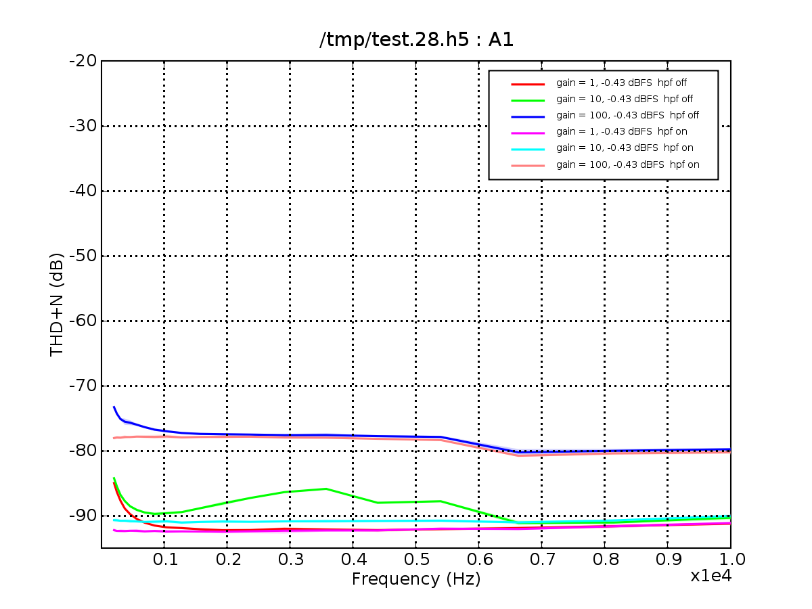
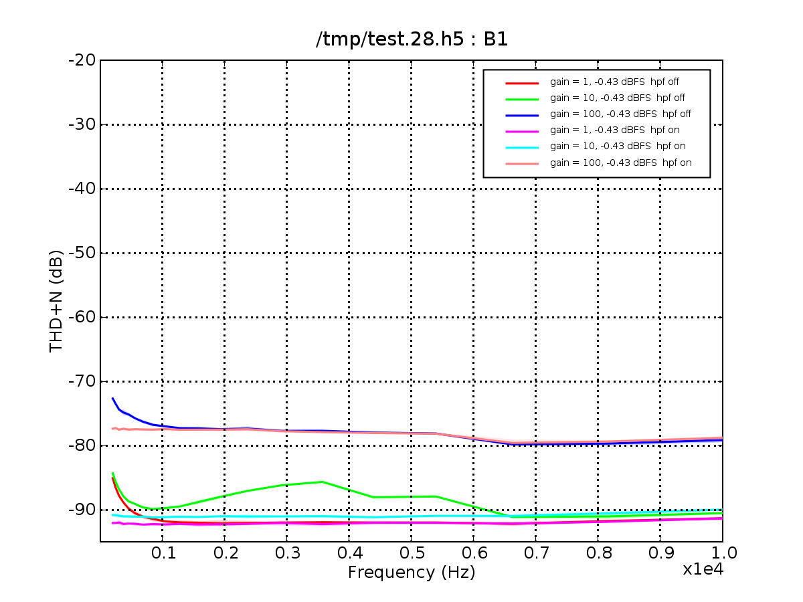
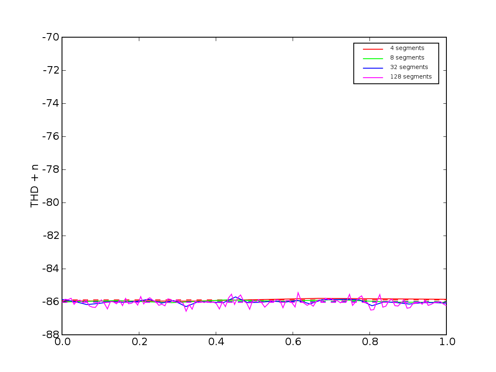
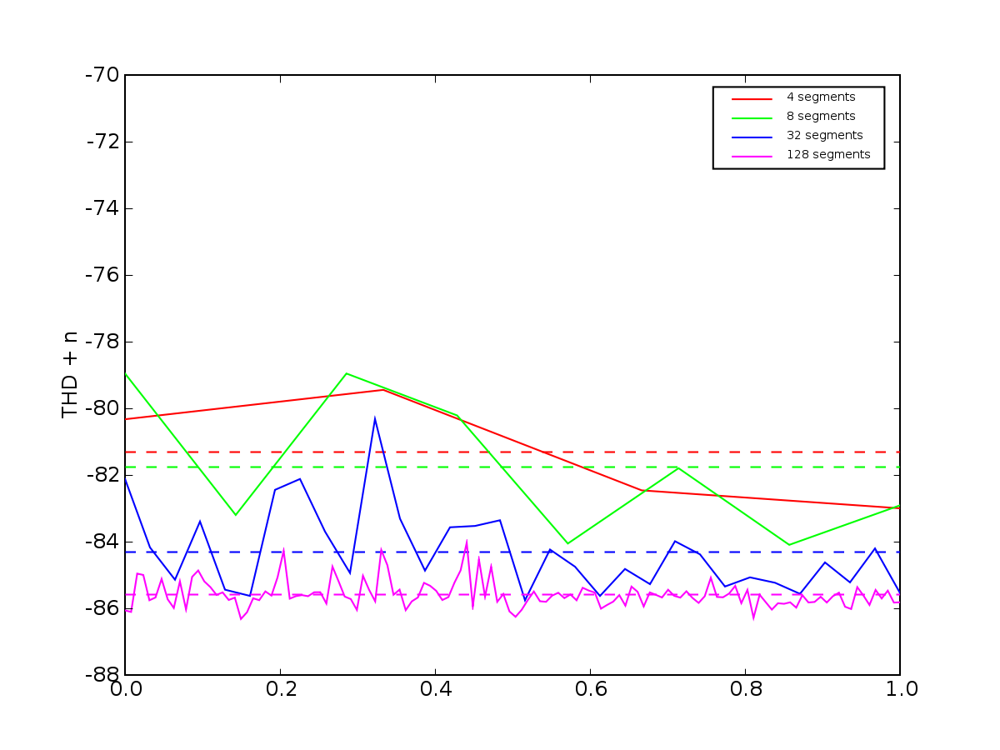
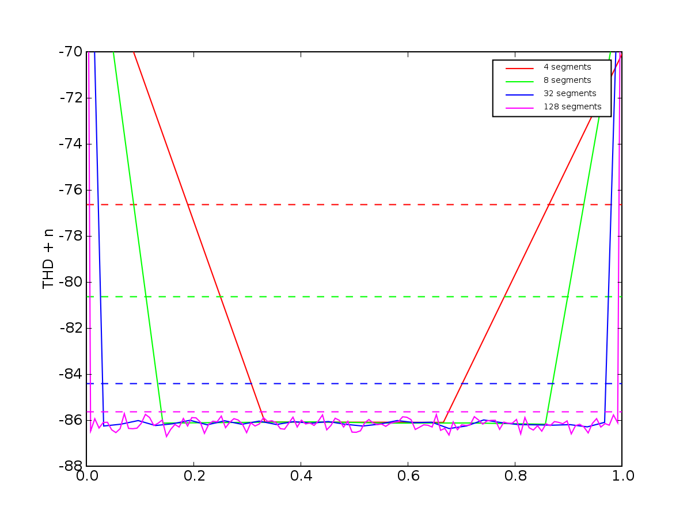

This is confusing and unfortunate.
|  |
 |
|  |
 |
 |
| THD+N across multiple segment
sizes for 2.6k, gain = 100, with HPF on |
THD+N across multiple segment sizes for 2.6k, gain = 100, with HPF on | THD+N across multiple segment
sizes for 2.6k, gain = 100, with HPF on, filtered with |